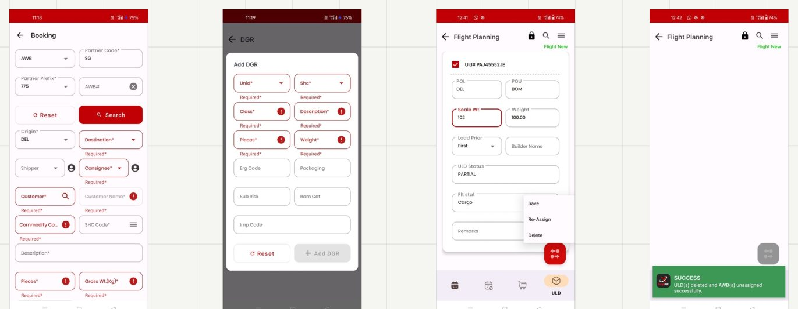
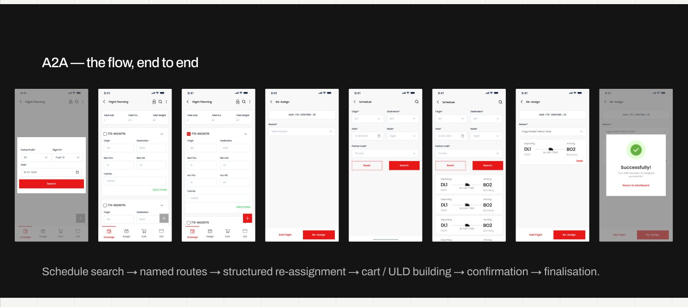
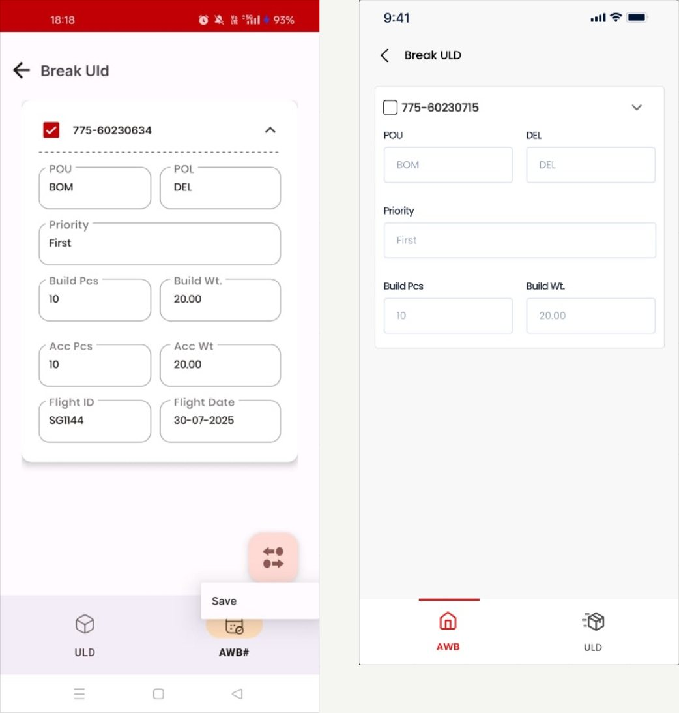
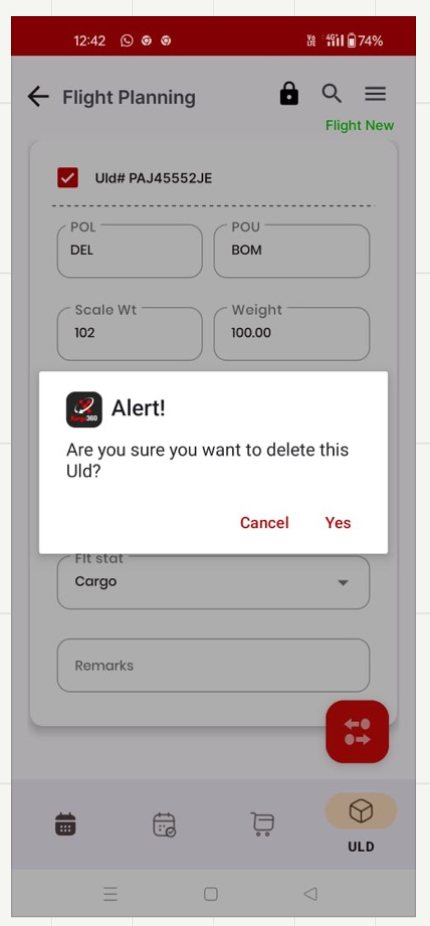
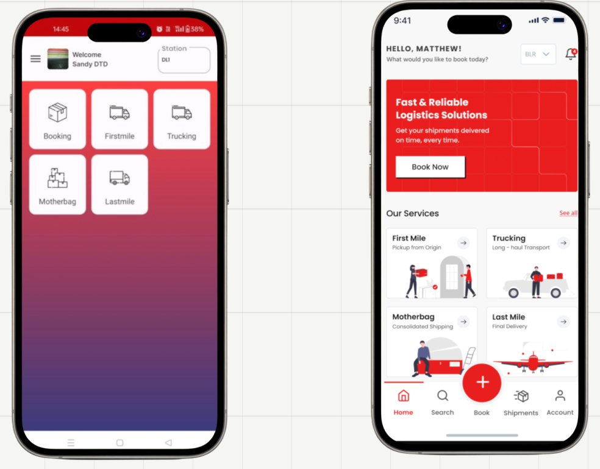
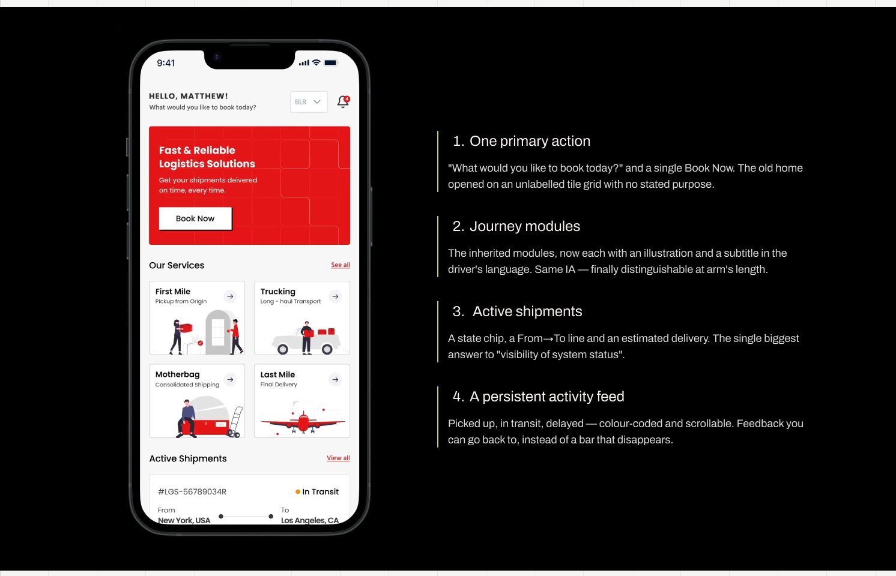
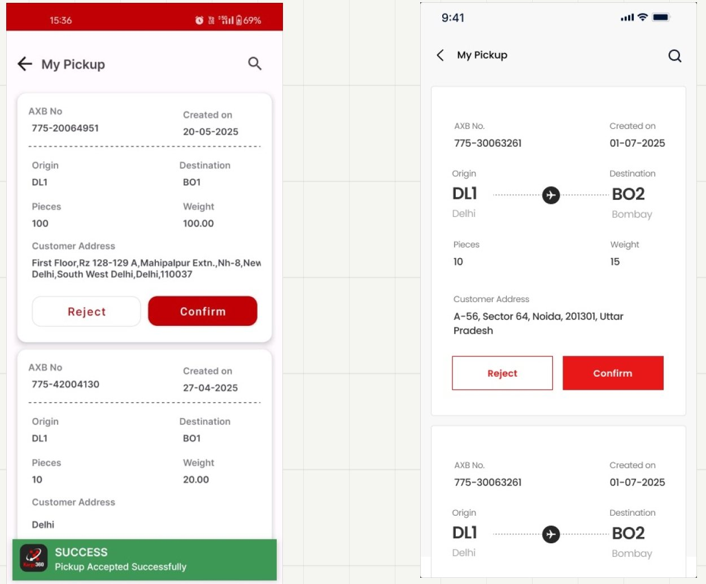
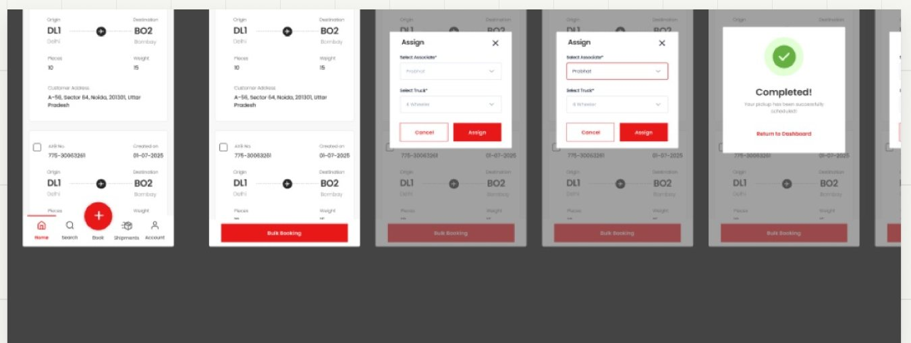
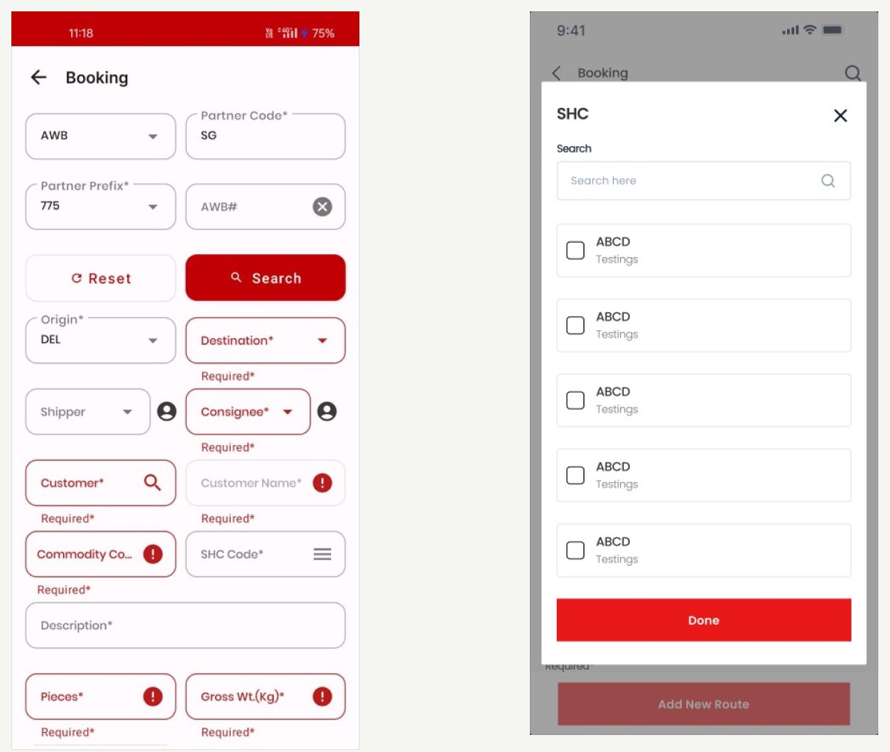

COLOUR
PALETTE
Kargo360 is a two-sided operational product: A2A for airside flight and manifest operations, and D2D for pickups, trucking and delivery. The redesign focused on the hidden workflow underneath the UI — and on making that workflow legible to the people operating it.
245
screen captures audited
2
apps redesigned
8
workflow rules uncovered
Air cargo moves through a chain of custody, and at every handover somebody has to tell a system what just physically happened. A ULD arrives. It gets broken down. Pieces get assigned to a cart, a cart to a flight, a flight to a manifest. On the road, a pickup is assigned, collected, consolidated into a motherbag, trucked, and delivered.
Kargo's two apps cover both halves of that chain — A2A airside and D2D on the road — and the same company's staff move between them.
The brief was not simply to modernise the interface. It was to make the product usable by people wearing gloves, standing up, in a hurry, without relying on training to explain what the system was doing.
119
field captures
126
engineering screens
40+
fields on the worst screen
How might we make the workflow visible, so the app stops teaching by punishment?
The core insight
The software already knew the workflow. It just never told anybody.
I worked from two independent inventories: 119 captures taken in the field and the engineering team's own 126-screen build deck. Together they covered both apps end to end — crucially including error and success states, where the real evidence turned out to be.
I ran a heuristic evaluation and grouped findings by severity. The same issues repeated across otherwise different modules, which suggested a systemic problem rather than isolated UI defects.
Critical Severity Issues
Serious Severity Issues

Destination, Consignee, Customer, Customer Name, Commodity, SHC, Pieces, Gross Wt — all red, all "Required*".
Eleven fields — UNID, SHC, Class, ERG Code, Sub Risk, Rem Cat — with no explanation of any of them.
The destructive action lives in a three-item text menu with no icon, colour or separation.
The success bar lands on top of the floating action button you just used.
The error messages were the specification. Auditing the failure states is where the project turned. The errors were not random. Each one encoded a business rule the software already knew, revealed only after the user broke it.
The app knows the ULD has not arrived. Surface that state on the card and make Arrive the obvious next step.
A broken ULD cannot move backward in the lifecycle. That rule should disable the control and explain why.
The desired outcome has already happened. What looks like an error is actually missing status.
The system already has a sequence: build → manifest → depart. The interface simply never draws it.
The system knows which rows are legal. Filter them, or make the others visibly unavailable.
The action needs a prerequisite. Keep the primary action disabled until the missing requirement is satisfied.
Read together, the errors describe a complete state machine. The software enforced it perfectly; the interface rendered it nowhere.
The reframe
I stopped designing screens and started drawing the process the system already runs. That is why the redesign begins with information architecture, not UI.
Nobody is sitting down. Both apps are used in the field, and the field is hostile to the interface patterns the old product relied on: tiny two-column inputs, text-only menus and transient toasts. I designed around three recurring operator contexts.
RRamp agentA2A · airside
"i just need to know if this ULD is ready to break."
NEEDStatus at a glance, and only the actions that are legal right now.
DPickup driverD2D · on the road
"accept or reject — and if i reject, why?"
NEEDOne decision-ready card, batch actions, structured reasons.
BBooking deskA2A / D2D
"i know the shipper. i don't know the ERG code."
NEEDEnter what is known now, and look the rest up.
A two-column input is a desk pattern. On an apron in daylight with gloves on, the usable unit is a card you can read at arm's length and a button you can hit without looking.
Four rules, applied to both apps.
Break ULD, Re-Assign and Export Manifest describe system operations. D2D's journey-based vocabulary showed that the company could already speak in user tasks — so the problem was solvable in-house, not inherent to freight.
Status moves onto the object: shipment cards carry a state chip and an ETA, ULD rows carry their lifecycle stage, and actions that are not legal yet are disabled rather than allowed-then-refused. The eight error messages become eight pieces of interface.
Booking sub-entities become focused sheets layered over the booking, so users keep context. The form is split into find the shipment and describe the shipment.
Airport codes carry city names underneath. Navigation labels stay visible. Code fields become searchable pickers instead of memory tests.

A2A is the harder of the two because the domain genuinely is complex: a cart holds pieces, a ULD holds carts, a flight holds ULDs, and a manifest describes the flight. The old interface flattened those relationships into repeated input rows.
The redesign gives each operational object a clear identity, data hierarchy, state, and set of legal actions.
This is the diagram the old app never showed. Containment runs outside-in, and every level carries its own state — which is exactly what the error messages were policing.
Manifest sits alongside rather than inside: it describes a flight's contents at a point in time, which is why "flight must first be manifested" was a sequencing rule and not a property of any one object.
Break ULD is a useful example because the underlying data did not change. The redesign focused on legibility, grouping and interaction quality on a screen that could be used on an apron.
The same values are presented as a proper form: label, then input, at a size that can be hit confidently.
The checkbox becomes a real touch target, because selection is the first thing the user needs to do.
Menus open as focused sheets rather than fragments squeezed out from underneath a floating action button.
Instead of Yes, the destructive button says what it does. The confirmation explains what happens to the associated AWBs.
Success and error states take over the screen or use non-blocking placement, instead of covering the field or action the user needs next.

Every label is a 10px notch cut into the outline of its own box, and the only action, "Save", escapes from behind the FAB and lands half on top of the navigation.
The same values, set as a proper form. The card groups what belongs to one AWB; nothing floats over anything; the checkbox is a real target.

"Are you sure you want to delete this Uld?" — a default OS alert, with the destructive choice rendered as the plain word Yes, at exactly the same visual weight as Cancel.
A ULD contains AWBs. Deleting it unassigns all of them — the consequence the person actually needs to weigh. The dialog never mentions them.
The verb replaces "Yes", so the button says what it does. The safe option is outlined, the destructive one filled — equal size, unequal weight. And the outcome takes the whole screen with one way onward.
D2D was where restraint mattered more than invention. Its information architecture was already correct: Booking, Firstmile, Trucking, Motherbag and Lastmile. Re-architecting it would have destroyed useful muscle memory.
So I kept the structure and changed what the structure could communicate: priority, state, movement and next action.

on a magenta-to-orange gradient, as five identical tiles, with no status, no priority and no way to tell what's urgent.
Illustrated cards you can distinguish at a glance, then the two things the old home never showed: what's moving now, and what just happened.

"What would you like to book today?" and a single Book Now. The old home opened on an unlabelled tile grid with no stated purpose.
The inherited modules, now each with an illustration and a subtitle in the driver's language. Same IA — finally distinguishable at arm's length.
A state chip, a From→To line and an estimated delivery. The single biggest answer to "visibility of system status".
Picked up, in transit, delayed — colour-coded and scrollable. Feedback you can go back to, instead of a bar that disappears.

Bare codes, uniform grey labels, an address wrapping mid-word, and a success bar parked over the next card.
The route is drawn, not encoded; the address gets room to breathe; Reject and Confirm carry equal width but unequal weight.
Structured reasons and bulk assignment both already existed — more sound thinking buried under its own presentation. The reason picker was an inline block that appeared mid-card, pre-flagged red, before the driver had done anything.

So the redesign keeps the logic and rebuilds the moment: assignment moves into a sheet with its own two decisions and nothing competing; the reason list becomes a clean radio set where remarks appear only for Other; and the outcome takes the whole screen instead of sliding over the card you were reading.
Special Handling Codes are controlled operational vocabulary. The legacy experience gave users a text box and expected recall. The redesign makes them searchable and multi-selectable in a focused sheet.

"SHC Code*" sits as a typed field among fourteen others — recalled from memory, validated only on submit.
A searchable checklist in a sheet over the booking you're already in. Multi-select, because shipments routinely carry more than one code.
Why this matters
This is the difference between an interface that assumes expertise and one that supplies it. In a domain where the wrong code can become a safety issue, recognition over recall is not a usability nicety.
The whole project reduces to one change in the order of events.
Before — reacting to mistakes
↻ and repeats, once per shift, for years
After — communicating state
✓ no interpretation required
What changed
Across both apps, the redesign shifts the interface from reacting to mistakes to communicating the operational state that makes those mistakes predictable.
The redesign is grounded in a 119-screen field audit, the engineering build deck, and domain reasoning. It has not yet been validated on an apron or in a live driving context. I would keep that limitation explicit rather than claiming outcomes the project has not measured.
The next research sprint would watch four ramp agents and two drivers complete real work, then measure the moments where the redesigned state model is expected to matter most.
→~0
Should trend toward zero, because invalid actions are now prevented rather than repeatedly refused.
new vs experienced
Compare new and experienced operators on a critical A2A workflow.
↓drop-off
Measure whether structured sub-flows reduce drop-off on the multi-entity booking task.
↓new starter
Test whether the visible sequence helps a new starter reach a complete manifest faster.
Closing thought
Kargo360 gave me a useful reminder: complex operational products do not become usable by hiding the domain. They become usable when the interface exposes the domain model clearly enough that people can act without translating the system in their head.
The portfolio takeaway
I did not redesign two apps screen by screen. I audited the evidence, uncovered the hidden state machine, rebuilt the information architecture around the user's work, and used the UI to make the system's existing logic visible.